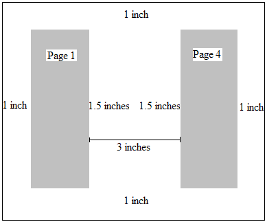
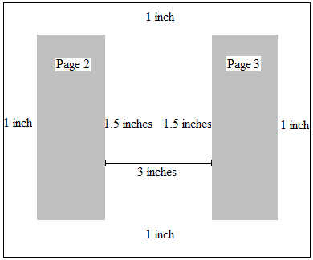

bookFoldRevPrinting (Reverse Book Fold Printing)
This element specifies if pages of a given WordprocessingML document are to be printed as signatures in reverse order. Signatures are printed sheets, which depict several pages of a document that are folded and bound with other signatures to form a booklet, a set of which can be bound together to form a book like publication. Specifically, this element specifies that each page in a given WordprocessingML document should be oriented in a landscape fashion and divided in half vertically, with two left margins emanating from the bisector of the page, and right margins instantiated at the left and right side of each page.
In addition, this element is used in conjunction with the bookFoldPrintingSheets element (§2.15.1.12) to enable given WordprocessingML document to be printed such that the series of signatures printed may be folded and bound to create a booklet.
This element has no impact on the settings of printer leveraged by the hosting application. In other words, if the printer leveraged by the hosting application has been configured to print on one side of a page, including the WordprocessingML for this element has no effect.
If this element is omitted, then pages shall not be printed as reverse book fold signatures. If the bookFoldPrinting element (§2.15.1.11) is also specified, then that element shall be ignored, and this element shall be used instead.
[Example: Consider a four page WordprocessingML document with a 2,160 twentieths of a point (one and a half inch) left margin, and 1,440 twentieths of a point (one inch) bottom, right, and top margins using the pgMar element (§2.6.11) surrounding the text extents of the page (represented by the gray shaded area in diagrams below). These page margins are specified using the following WordprocessingML:
<w:pgMar w:top="1440" w:right="1440" w:bottom="1440" w:left="2160" />
The necessary WordprocessingML and consequential effect of setting the bookFoldRevPrinting element's val attribute to true versus false and the bookFoldPrintingSheets element's val attribute to 4, is depicted graphically below—diagrams not drawn to scale:
|
<w: bookFoldRevPrinting w:val="false"/> |
<w: bookFoldRevPrinting w:val="true"/> <w: bookFoldPrintingSheets w:val="4"/> |
|
First Printed Sheet |
First Printed Signature |
|
|
 |
|
Second Printed Sheet |
Second Printed Signature |
|
|
 |

Assuming the page was already oriented in a landscape fashion, setting the bookFoldRevPrinting element’s val attribute to true divided the page in half vertically, with two left margins emanating from the bisector of the page, and right margins instantiated at the left and right side of each page, enabling two signatures to be printed.
In addition, this element is used in conjunction with the bookFoldPrintingSheets element to enable the given WordprocessingML document to be printed such that the series of signatures printed may be folded and bound to create a booklet. Specifically, the signatures may be placed back to back, with top the bottom of each sheet aligned, and folded such that a booklet is created. end example]
[Note: This element could also be leveraged by the hosting application to notify the application to display two pages per sheets within its user interface to allow for a WYSIWYG user experience. end note]
|
Parent Elements |
|
settings (§2.15.1.78) |
|
Attributes |
Description |
|
val (On/Off Value) |
Specifies a binary value for the property defined by the parent XML element.
A value of on, 1, or true specifies that the property shall be explicitly applied. This is the default value for this attribute, and is implied when the parent element is present, but this attribute is omitted.
A value of off, 0, or false specifies that the property shall be explicitly turned off.
[Example: For example, consider the following on/off property:
<w:… w:val="off"/>
The val attribute explicitly declares that the property is turned off. end example]
The possible values for this attribute are defined by the ST_OnOff simple type (§2.18.67). |
The following XML Schema fragment defines the contents of this element:
<complexType name="CT_OnOff">
<attribute name="val" type="ST_OnOff"/>
</complexType>